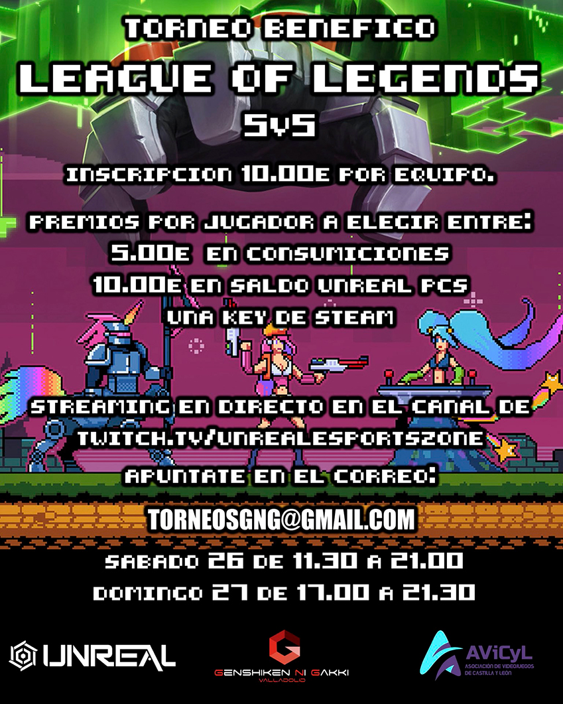
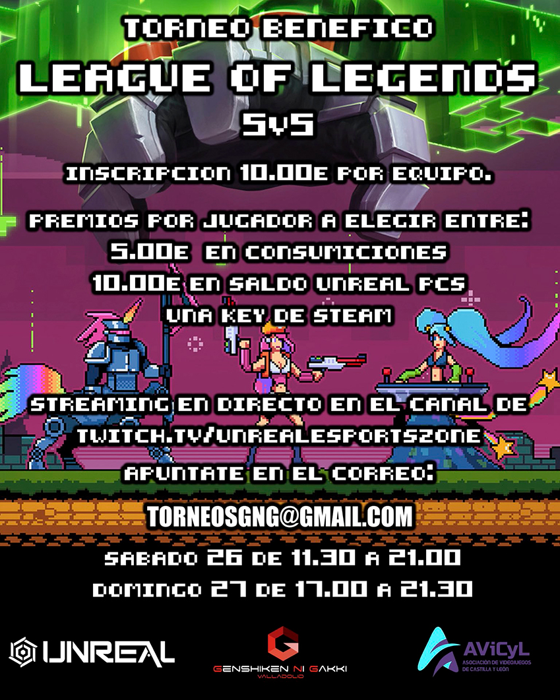

AViCyL esta conformada por jovenes interesados en los videjuegos que los disfrutan en diferentes plataformas y formatos. Cualquier residente en Castilla y León puede hacerse miembro.
Tratamos temas tan variados como:


 
